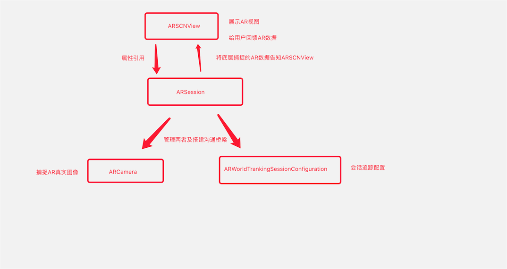

ARSession是连接底层与AR视图的桥梁，ARCNView内部所有的代理方法都是ARSession提供的

获取相机位置的方法
- 实时不断的获取相机位置,然后由
ARSession告知用户
//获取相机位置
- (void)session:(ARSession *)session didUpdateFrame:(ARFrame *)frame
- 用户想要时主动去获取,通过其
currentFrame属性获取
API
/**
代理
*/
@property (nonatomic, weak) id <ARSessionDelegate> delegate;
/**
指定代理执行的线程（主线程不会有延迟，子线程会有延迟），不指定的话默认主线程
*/
@property (nonatomic, strong, nullable) dispatch_queue_t delegateQueue;
/**
相机当前的位置（是由会话追踪配置计算出来的）
*/
@property (nonatomic, copy, nullable, readonly) ARFrame *currentFrame;
/**
会话追踪配置
*/
@property (nonatomic, copy, nullable, readonly) ARSessionConfiguration *configuration;
/**
运行会话（这行代码就是开启AR的关键所在）
*/
- (void)runWithConfiguration:(ARSessionConfiguration *)configuration NS_SWIFT_UNAVAILABLE("Use run(_:options:)");
/**
运行会话，只是多了一个参数ARSessionRunOptions：作用就是会话断开重连时的行为。
ARSessionRunOptionResetTracking：表示重置追踪
ARSessionRunOptionRemoveExistingAnchors：移除现有锚点
*/
- (void)runWithConfiguration:(ARSessionConfiguration *)configuration options:(ARSessionRunOptions)options NS_SWIFT_NAME(run(_:options:));
/**
暂停会话
*/
- (void)pause;
/**
添加锚点
*/
- (void)addAnchor:(ARAnchor *)anchor NS_SWIFT_NAME(add(anchor:));
/**
移除锚点
*/
- (void)removeAnchor:(ARAnchor *)anchor NS_SWIFT_NAME(remove(anchor:));
@end
//session代理分类两部分，一个是观察者（KVO） 一个是委托者（代理）
#pragma mark - ARSessionObserver
//session KVO观察者
@protocol ARSessionObserver <NSObject>
@optional
/**
session失败
*/
- (void)session:(ARSession *)session didFailWithError:(NSError *)error;
/**
相机改变追踪状态
*/
- (void)session:(ARSession *)session cameraDidChangeTrackingState:(ARCamera *)camera;
/**
session意外断开（如果开启ARSession之后，APP退到后台就有可能导致会话断开）
*/
- (void)sessionWasInterrupted:(ARSession *)session;
/**
session会话断开恢复（短时间退到后台再进入APP会自动恢复）
*/
- (void)sessionInterruptionEnded:(ARSession *)session;
@end
#pragma mark - ARSessionDelegate
@protocol ARSessionDelegate <ARSessionObserver>
@optional
/**
更新相机位置
*/
- (void)session:(ARSession *)session didUpdateFrame:(ARFrame *)frame;
/**
添加锚点
*/
- (void)session:(ARSession *)session didAddAnchors:(NSArray<ARAnchor*>*)anchors;
/**
刷新锚点
*/
- (void)session:(ARSession *)session didUpdateAnchors:(NSArray<ARAnchor*>*)anchors;
/**
移除锚点
*/
- (void)session:(ARSession *)session didRemoveAnchors:(NSArray<ARAnchor*>*)anchors;
@end